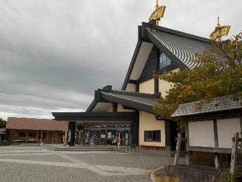
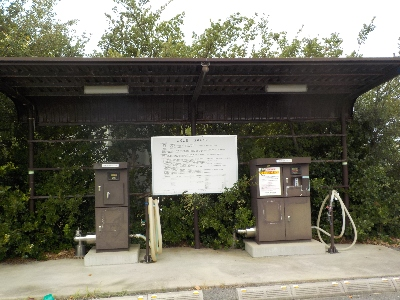

吉兆館には温泉スタンドがあります。
2024/09/15

道の駅大社ご縁広場にある吉兆館に初めて行きました。建物の中にあるお土産物屋さんは出雲物産館。お食事処は別の店舗、足湯も別の名前でとっても複雑な施設です。
なんで名前を1つにしないで分けたんだろう？

温泉スタンドがあるって知りませんでした。
いろいろありますね。地元の人で知っている人はどれくらいいるんだろう？
お土産物の商品数が多かったので、買い物するのにいい場所だと思いました。
島根県出雲市大社町修理免735-5
2024/09/15

道の駅大社ご縁広場にある吉兆館に初めて行きました。建物の中にあるお土産物屋さんは出雲物産館。お食事処は別の店舗、足湯も別の名前でとっても複雑な施設です。
なんで名前を1つにしないで分けたんだろう？

温泉スタンドがあるって知りませんでした。
いろいろありますね。地元の人で知っている人はどれくらいいるんだろう？
お土産物の商品数が多かったので、買い物するのにいい場所だと思いました。